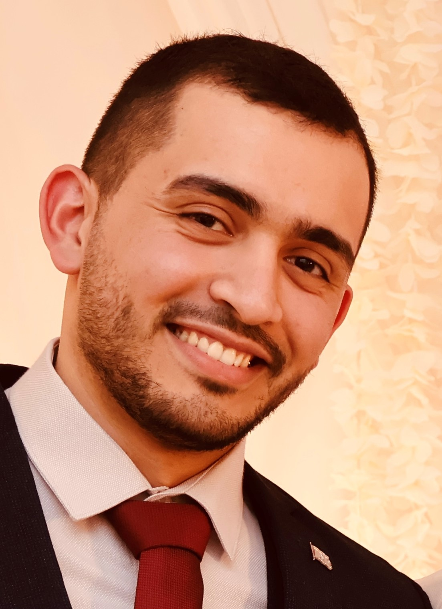

Mohamed Nail HEFIED.
PhD Candidate in Computer Science
Defence planned for early 2027
01 Education
PhD in Computer Science
Le Mans Université · LIUM, Laval, France
Automatic analysis and evaluation of dental surgery gestures in a virtual training environment.
Supervisors: Dr Ludovic Hamon & Prof. Sébastien George.
Master’s in Human–Machine Systems Engineering
Université de Lorraine, Metz, France · 3rd / 164
Master’s in Automatic Control
Université Ziane Achour, Djelfa, Algeria · Top of class · ECTS A
Bachelor’s in Industrial Engineering · Manufacturing
Université Abou Bekr Belkaid, Tlemcen, Algeria · ECTS A
02 Experience
Doctoral research · EVAGO Project
Since Oct. 2022LIUM · Le Mans Université, Laval
Context
Supporting dental surgery gesture learning in preclinical training.
Research questions: adapting automatic evaluation to experts’ evolving observation needs and openly integrating multiple forms of motor expertise.
Development of VEEGO, a virtual environment for evaluating dental gestures.
- Motion capture and replay through 3D avatars; machine learning models trained via the interface on expert demonstrations; automatic detection of gesture and posture errors with real-time visual and textual feedback.
- Validated with experts and evaluated with more than 60 dental students in Nantes.
- Collaboration with dental experts from RMeS, education researchers from CREN and industrial partner HRV.
View the project online ↗EVAGO presentationWatch the video ↗
Teaching computer science
2022–2026Computer Science Department · IUT de Laval
Part-time lecturer from 2022 to 2025 (64 h/year), then ATER from September 2025 to August 2026 (175 h).
Lectures and practical sessions in the Computer Science BUT:
- BUT Year 1
- SQL databases (MySQL); interfaces with JavaFX / FXML.
- BUT Year 2
- Procedural SQL, cursors, triggers; NoSQL (MongoDB).
- BUT Year 3
- Unreal Engine: Blueprints, geometry, rendering, interactions, animation and physics.
Updating courses and practical sessions, designing and marking exams; internship and report supervision, oral defence panels and first-year tutoring.
Engineering intern · Augmented reality
2022LIST · Esch-sur-Alzette, Luxembourg
Development of HoloLens 2 applications to assist first responders in radioactive environments.
03 Publications
- 2026
- 2024
- 2024
- 2024
- 2023
- 2017